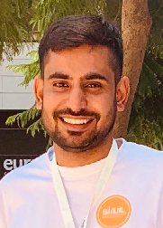

Divyank is a result oriented Data Scientist. His contributions to many projects received client testimony and improved our customer service experience. As his manager, I was impressed with his work ethic and professionalism. He showed a good attitude towards exploring the fundamentals of involved algorithms and fostered a culture of knowledge sharing within the organization by involving the team with latest research. He possesses a unique quality of being approachable and willingness to assist on tasks outside his immediate expertise
Reporting Manager, crossML Pvt Ltd
I mentored Divyank during at Sabudh foundation. He acquired a very good understanding of deep learning. He demonstrated good understanding of Recommendation Engines and text analytics and has a good hold of various NLP techniques. Apart from technical skills he has excellent communication skills and I would give my strongest recommendation for roles which require intelligence, organization and a positive attitude
Internship mentor, Sabudh Foundation
Of all the people I meet every day only some leave their mark and Divyank is one of them. We collaborated for a research publication to forecast COVID-19 infestimations and estimate the extent of the pandemic; initially we were on different pages however he got us on board with exceptional ideas. He exhibited great maturity and discipline while carrying out various responsibilities such as surveying research papers, developing a prediction model in Python and documenting the research findings on Overleaf. For his pristine work ethics and adjustability to given situations I give him my highest recommendation to anyone looking for a Data Science professional.
Assistant Professor, Thapar Institute of Engineering and Technology